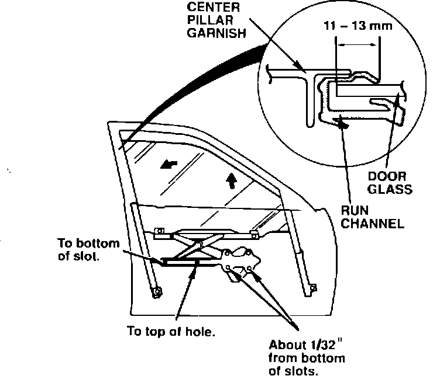

Door Glass - Wind Noise
91acura02
February 4, 1991
BULLETIN NO.
91-012
YEAR MODEL VIN APPLICATION
1991 LEGEND SEDAN ALL
Wind Noise From Door Glass
SYMPTOM
Wind noise coming from the door glass area.
PROBABLE CAUSE
The front door glass is not sealing properly at the rear of the door.

CORRECTIVE ACTION
1. Remove the door panel as described on page 20-3 of the Service Manual.
2. Loosen the two roller guide bolts and the four regulator/motor bolts.
3. Lower the glass a few millimeters. Lift the front of the glass up and push the rear of the glass back into the run channel. Hold the glass in this position.
4. First, tighten the rear roller guide bolt (it should be at the bottom of its adjustment slot). Next, tighten the front roller guide bolt (it should be at the top of its hole). Finally, tighten the four regulator/motor bolts (they should be about 1/32" from the bottom of their adjustment slots).
5. Measure the engagement of the rear edge of the door glass in the run channel; it should be between 11 - 13 mm. If the engagement is incorrect, readjust the roller guide and regulator.
6. Reinstall the door panel.
WARRANTY INFORMATION
In warranty: The normal warranty applies.
Out-of-warranty: Any repair performed after warranty expiration may be eligible for goodwill consideration by the District Service Manager. You must request consideration, and get the DSM's decision, before starting work.
Operation number: Left door 826310 Right door 827310
Flat rate time: 0.5 hour per door
Failed P/N: 73350-SP0-A00
Defect code: 056
Contention code: B07